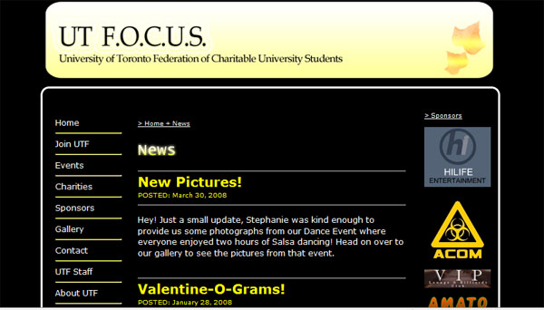

UTFocus (Designed using AJAX/PHP in 2007)
UTFocus is a charitable non-profit organization that I volunteered for in 2007-2008 and I was co-webmaster of the site, in charge of daily maintenance and organizing the layouts. The site was implemented using PHP and AJAX techniques to render the site more efficiently.
